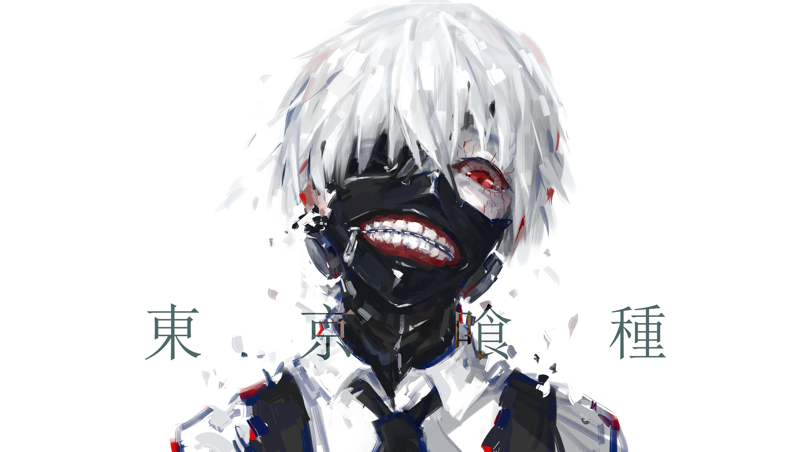
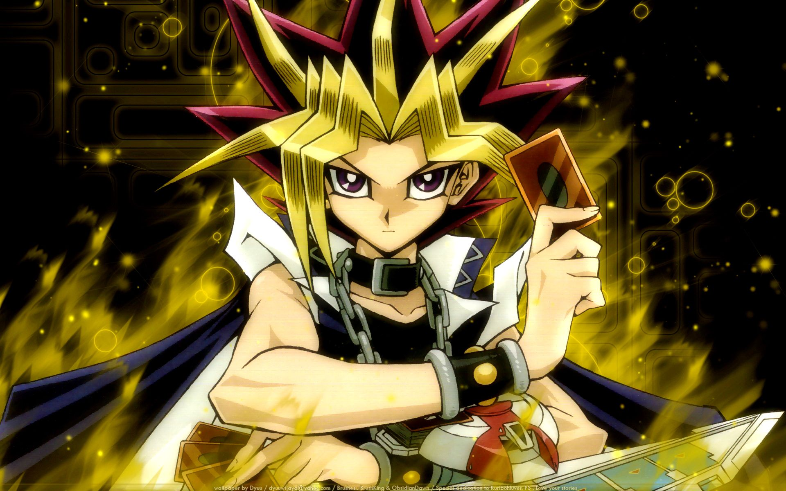

10. One Piece

One Piece is my favorite manga of all time and it is also the longest manga on this list with over a thousand chapters and it is still ongoing. One Piece is a very diverse manga with very strong world building. The character design in this manga has a lot of variety with a lot of goofy aspects and very unique personalities. The manga follows a boy named Luffy who is extremely determined to become the "Pirate King", he sets off from his village to amass a crew. Meeting so many different quirky people he slowly gains trusted companions who he treats like family. This is a long manga but I highly recommend it as it is one of the most unique mangas on this list with so much to offer.
9. Tokyo Ghoul
Tokyo Ghoul is the darkest of the manga on this list leaning on blood and gore. The story follows a man named Kaneki who lives his day to day life enjoying books when an accident occured turning him into a ghoul opening him up to a darker world, meeting other ghouls both hostile and friendly. Being both human and ghoul his ambitions led him to try bring humans and ghouls together.
8. Yu-Gi-Oh!
Yu Gi Oh! is a manga that is different from the rest on this list, it focuses primarily on the card game "Yu-Gi-Oh!" and has 5 different series with 5 different protagonists, each series introduces new mechanics to the "Yu-Gi-Oh!" card game making each series new and fresh with each series having a variety of different characters and personalities. This manga is one of the longer ones on this list with the different series totalling 574 chapters approximately.
7. Demon Slayer

Demon Slayer follows the story of a man named Tanjiro and his sister Nezuko. After Nezuko becomes a demon and his whole family killed by demons, Tanjiro goes on to become a demon slayer to end the terror of demons and to find a cure for his sister. On his journey Tanjiro meets many people who teach him and befriend him, who follow him as comrades in arms.
6. Naruto
Naruto is about a boy named Naruto who was ostracized by his village for having a nine tailed demon fox sealed inside him, because of this he decided to strive to become the leader of the village so that the people respect and acknowledge him. The manga follows his journey as he meets new people and enemies, turning enemies into friends and saving the world. This manga is one of the longer ones on this list with 500 chapters